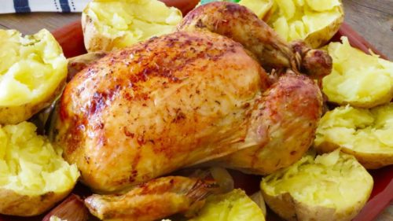

Las recetas de mi abuela
Inicio
Sobre nosotros
Contacto
Segundo plato:

Pollo al horno con patatas
Ingredientes:
Para 4 personas:
1 pollo limpio de 1,600 Kg
5 o 6 patatas
2 cebollas
1 cabneza de ajos
1 limón
250 ml de caldo de pollo o agua
aceite de oliva
sal
Mezcla de especias:
1 cucharada de orégano
1 c. de tomillo
1 c. de albahaca
1/2 c. de romero
1/2 c. de pimienta negra molida
Preparación del plato:
Prepara la mezcla de hierbas aromáticas para condimentar el pollo. Pon en un bol una cucharada de orégano, una de tomillo, una de albahaca, media de romero y media de pimienta negra molida. Mezcla bien y guárdalo en un tarro. Esta mezcla ya la tienes lista para condimentar otros platos de carne.
1 pollo limpio de 1,600 Kg
Precalienta el horno a 180 grados con calor arriba y abajo. Coloca un poco de aceite de oliva virgen extra en la bandeja y coloca el pollo encima untado también con aceite. Extiende bien el aceite por todo el pollo para que las especias se queden bien pegadas a la piel. Reparte bien las especias por todo el pollo, por dentro y por fuera. Introduce un limón dentro del pollo y unos dientes de ajo, también un poco de sal. Ata las patas con un hilo de algodón. Añade a la bandeja los dientes de ajos, la cebolla y un poco de caldo de pollo.
1 pollo limpio de 1,600 Kg
Lleva el pollo al horno. De vez en cuando puedes regarlo con su propio jugo o añadir un poco más de caldo si ves que se va quedando un poco seco. Puedes aprovechar el calor del horno para asar unas patatas. Programa dos horas si tu horno tiene temporizador, pero debes mirar de vez en cuando a ver cómo va el asado. Saca el pollo cuando esté bien doradito. Acuérdate de dar la vuelta a las patatas cuando lleven la mitad de tiempo en el horno, en este caso, a la hora.
Saca el pollo del horno si lo vas a servir inmediatamente y, si no, déjalo en el horno hasta el momento de servir y que no pierda el calor.
Prepara las patatas. Dales un pequeño corte y verás cómo en caliente, y empujando un poquito con la mano, se abren por la mitad. Alíñalas con una pizca de sal y un buen chorro de aceite virgen extra. Ya las tienes listas.
Cómo hacer tortilla de patatas SIN HUEVO.
Ingredientes:
Para 4 personas:
800 g de patatas
140 g de harina de garbanzo (1 y 1/2 tazas)
360 ml de agua (1 y 1/2 tazas)
1 cebolla
aceite de oliva virgen extra
sal
Preparación del plato:
Pela las patatas. Una vez peladas y bien lavadas, corta en finas láminas.
Coloca un chorro de aceite de oliva en una sartén y añade las patatas con un poco de sal. Deja que se vayan haciendo lentamente con el fuego bajo y tapadas para que las patatas se pongan muy tiernas sin llegar a tostarse. La patata tendrá que estar en la sartén unos 25 minutos a fuego lento.
Pica la cebolla bien fina. Añade la cebolla a las patatas y vuelve a tapar la sartén. Dale alguna vuelta de vez en cuando.
Prepara la mezcla que va a sustituir al huevo. Pon en un bol la harina de garbanzos, el agua y un poco de sal. Bate hasta integrar la mezcla y que no quede ningún grumo.
Añade la patata a la mezcla de agua y harina de garbanzo y llévala a la sartén cuando esté todo mezclado. Pon un poco de aceite en una sartén antiadherente y vierte la tortilla cuando el aceite esté caliente. Alisa bien la superficie y deja que cuaje a fuego bajito (yo lo he puesto en el número 6 de los 9 niveles que tiene mi placa). Dale la vuelta a la tortilla cuando cuaje por un lado y echa una gotita de aceite si se ha secado la sartén. Ahora, tiene que cuajar por el otro lado. En total la he tenido de 12 a 15 minutos.